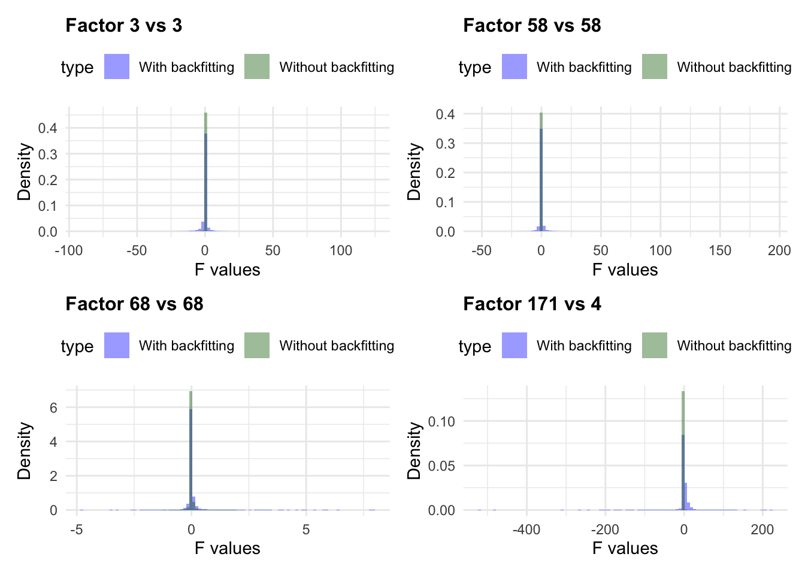
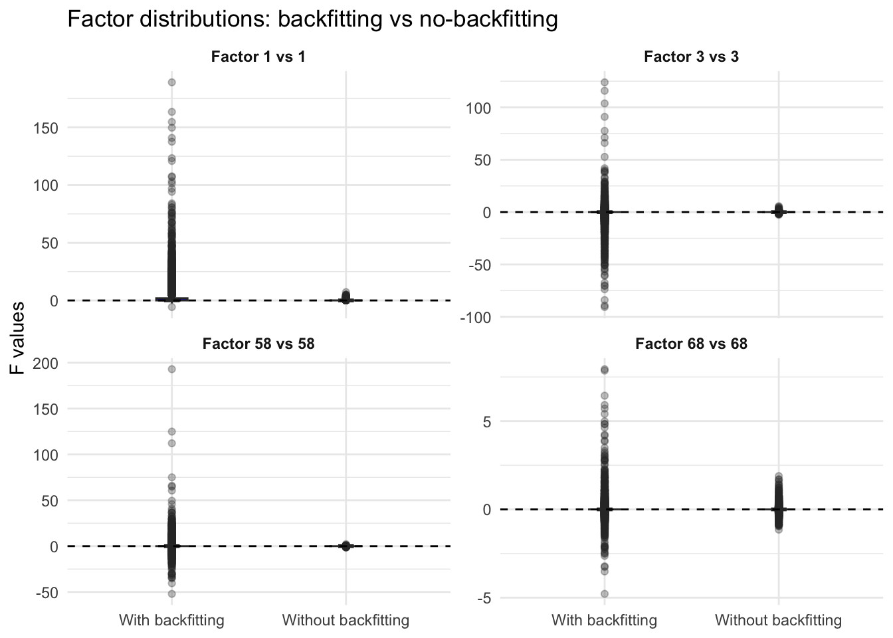
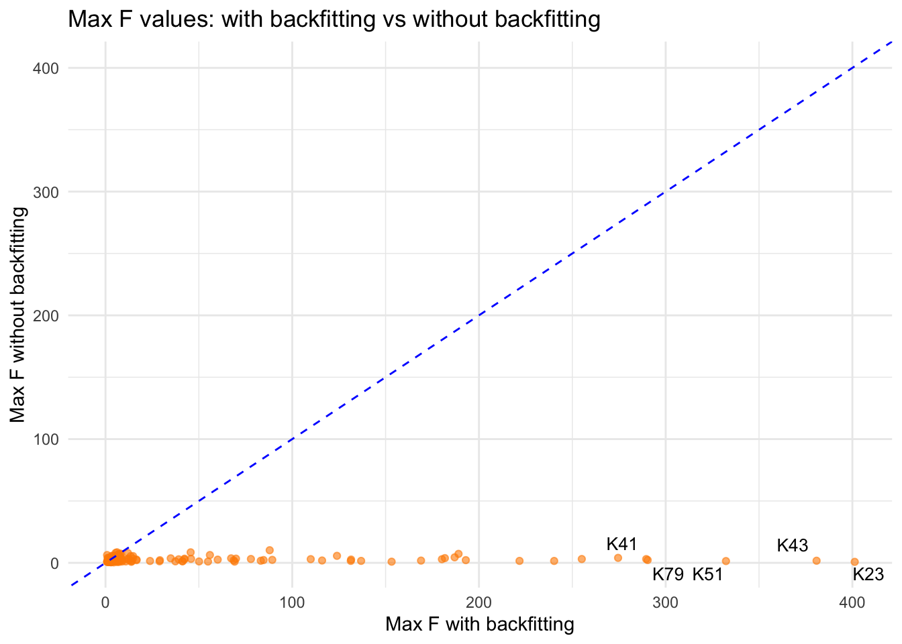
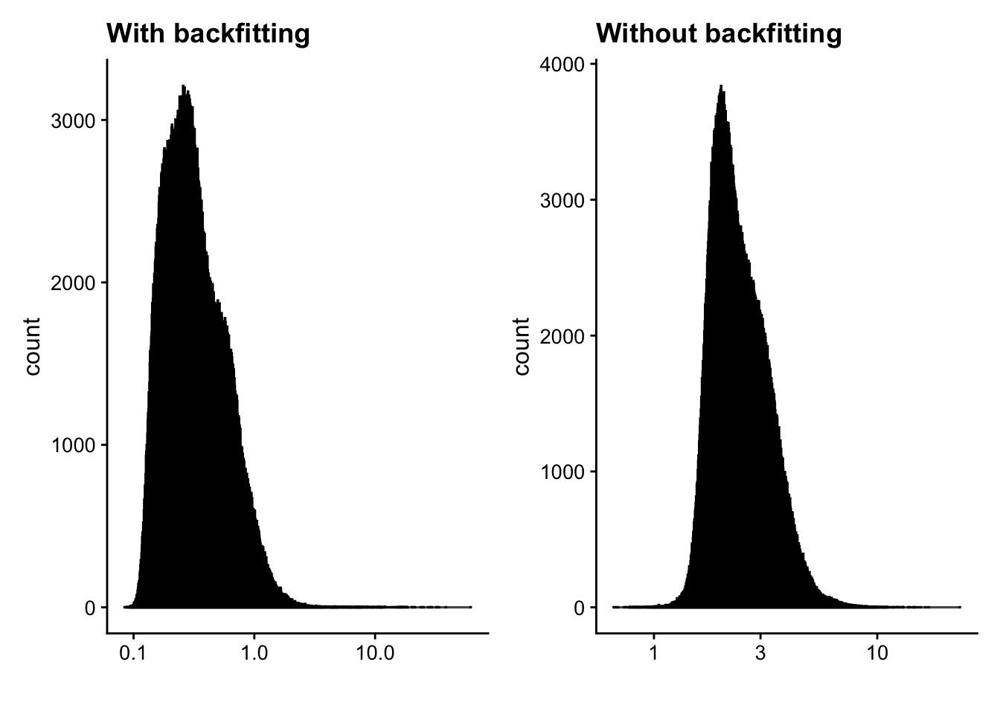

Last updated: 2025-11-03
Checks: 7 0
Knit directory: immgen-t-factors/analysis/
This reproducible R Markdown analysis was created with workflowr (version 1.7.2). The Checks tab describes the reproducibility checks that were applied when the results were created. The Past versions tab lists the development history.
Great! Since the R Markdown file has been committed to the Git repository, you know the exact version of the code that produced these results.
Great job! The global environment was empty. Objects defined in the global environment can affect the analysis in your R Markdown file in unknown ways. For reproduciblity it’s best to always run the code in an empty environment.
The command set.seed(1) was run prior to running the
code in the R Markdown file. Setting a seed ensures that any results
that rely on randomness, e.g. subsampling or permutations, are
reproducible.
Great job! Recording the operating system, R version, and package versions is critical for reproducibility.
Nice! There were no cached chunks for this analysis, so you can be confident that you successfully produced the results during this run.
Great job! Using relative paths to the files within your workflowr project makes it easier to run your code on other machines.
Great! You are using Git for version control. Tracking code development and connecting the code version to the results is critical for reproducibility.
The results in this page were generated with repository version feb4b4b. See the Past versions tab to see a history of the changes made to the R Markdown and HTML files.
Note that you need to be careful to ensure that all relevant files for
the analysis have been committed to Git prior to generating the results
(you can use wflow_publish or
wflow_git_commit). workflowr only checks the R Markdown
file, but you know if there are other scripts or data files that it
depends on. Below is the status of the Git repository when the results
were generated:
Ignored files:
Ignored: .Rhistory
Ignored: .Rproj.user/
Ignored: analysis/.Rhistory
Ignored: code/.Rhistory
Untracked files:
Untracked: .DS_Store
Untracked: .gitignore
Untracked: analysis/.DS_Store
Untracked: analysis/conditional_analysis.rmd
Untracked: analysis/further_validation_f68.rmd
Untracked: analysis/level2_organ.rmd
Untracked: code/.DS_Store
Untracked: code/Figure1.R
Untracked: code/ROC.R
Untracked: code/analyze_protein_selected.R
Untracked: code/analyze_protein_selected.sbatch
Untracked: code/analyze_protein_selected_lognorm.R
Untracked: code/analyze_protein_selected_lognorm.sbatch
Untracked: code/analyze_protein_selected_positive.R
Untracked: code/analyze_protein_selected_positive.sbatch
Untracked: code/compare_greedy_back.R
Untracked: code/replicate_whole_data.sbatch
Untracked: data/.DS_Store
Untracked: data/annot_level1.rds
Untracked: data/annot_level2.rds
Untracked: data/condition_broad.rds
Untracked: data/condition_broad_AUC.rds
Untracked: data/condition_broad_AUC_CD8.rds
Untracked: data/condition_detailed.rds
Untracked: data/condition_detailed_AUC.rds
Untracked: data/condition_detailed_AUC_CD8.rds
Untracked: data/conditional_analysis_factor.rds
Untracked: data/conditional_analysis_factor_stats.rds
Untracked: data/factor_matching_results.csv
Untracked: data/factor_matching_results_filtered.csv
Untracked: data/factor_matching_results_noback.csv
Untracked: data/fit1_summary.qs
Untracked: data/fit1_summary_noback.qs
Untracked: data/fit2_summary.qs
Untracked: data/fit2_summary_noback.qs
Untracked: data/fit_replicate_summary_noback.qs
Untracked: data/flash_fixed_F_pm.rds
Untracked: data/flash_fixed_loading.rds
Untracked: data/flashier_snmf_summary.rds
Untracked: data/level_1_AUC.rds
Untracked: data/moran_list_umap.rds
Untracked: data/organ.rds
Untracked: data/organ_AUC.rds
Untracked: data/organ_AUC_healthy.rds
Untracked: data/organ_healthy.rds
Untracked: data/protein_flash_selected_summary.rds
Untracked: data/protein_flash_selected_summary_lognorm.rds
Untracked: data/protein_flash_selected_summary_pos.rds
Untracked: data/protein_mat.rds
Untracked: data/protein_mat_normalized.rds
Untracked: data/protein_mat_normalized_lognorm.rds
Untracked: data/replicate_whole_data.sbatch
Untracked: data/seurat_meta.rds
Untracked: data/umap_result.rds
Untracked: figures/
Unstaged changes:
Modified: analysis/half_validation_hungarian.rmd
Deleted: code/halves_validation.R
Note that any generated files, e.g. HTML, png, CSS, etc., are not included in this status report because it is ok for generated content to have uncommitted changes.
These are the previous versions of the repository in which changes were
made to the R Markdown (analysis/turn_off_backfit.rmd) and
HTML (docs/turn_off_backfit.html) files. If you’ve
configured a remote Git repository (see ?wflow_git_remote),
click on the hyperlinks in the table below to view the files as they
were in that past version.
| File | Version | Author | Date | Message |
|---|---|---|---|---|
| Rmd | feb4b4b | Ziang Zhang | 2025-11-03 | workflowr::wflow_publish("analysis/turn_off_backfit.rmd") |
| html | d66fb9f | Ziang Zhang | 2025-11-03 | Build site. |
| Rmd | 1984e3a | Ziang Zhang | 2025-11-03 | workflowr::wflow_publish("analysis/turn_off_backfit.rmd") |
| html | 86081df | Ziang Zhang | 2025-11-03 | Build site. |
| Rmd | 5724c4a | Ziang Zhang | 2025-11-03 | workflowr::wflow_publish("analysis/turn_off_backfit.rmd") |
| html | 9da6d06 | Ziang Zhang | 2025-11-03 | Build site. |
| Rmd | 97b7dee | Ziang Zhang | 2025-11-03 | workflowr::wflow_publish("analysis/turn_off_backfit.rmd") |
| html | 79fc9f9 | Ziang Zhang | 2025-10-30 | Build site. |
| Rmd | dd3d42e | Ziang Zhang | 2025-10-30 | workflowr::wflow_publish("turn_off_backfit.rmd") |
| html | 69a1111 | Ziang Zhang | 2025-10-30 | Build site. |
| Rmd | 17ebd2c | Ziang Zhang | 2025-10-30 | workflowr::wflow_publish("turn_off_backfit.rmd") |
knitr::opts_chunk$set(
message = FALSE,
warning = FALSE,
results = "hold"
)One conjecture we have so far is that the backfitting procedure may exacerbate the cancelling out effect in semi-nmf.
To confirm this, we will take a look at the full analysis where we turn off backfitting.
library(ggplot2)
library(dplyr)
library(fastTopics)
library(qs)
library(cowplot)
library(ggrepel)
library(patchwork)
data_path <- "../data/"
code_path <- "../code/"
# data_path <- "data/"
# code_path <- "code/"
seurat_meta <- readRDS(paste0(data_path, "seurat_meta.rds"))
flashier_snmf_summary <- readRDS(paste0(data_path, "flashier_snmf_summary.rds"))
flashier_snmf_summary_noback <- qs::qread(paste0(data_path, "fit_replicate_summary_noback.qs"))To make the comparison clear, we will use the same way to normalize the L matrix, by dividing each column by its maximum.
L_pm <- flashier_snmf_summary$L_pm
F_pm <- flashier_snmf_summary$F_pm
L_pm_noback <- flashier_snmf_summary_noback$L_pm
F_pm_noback <- flashier_snmf_summary_noback$F_pm
D <- diag(1 / apply(L_pm, 2, function(x) max(x)))
L_pm <- L_pm %*% D
F_pm <- F_pm %*% solve(D)
D_noback <- diag(1 / apply(L_pm_noback, 2, function(x) max(x)))
L_pm_noback <- L_pm_noback %*% D_noback
F_pm_noback <- F_pm_noback %*% solve(D_noback)Take the overlap of cells in the resulting L matrices.
common_cells <- intersect(rownames(L_pm), rownames(L_pm_noback))
L_pm <- L_pm[common_cells, ]
L_pm_noback <- L_pm_noback[common_cells, ]Next, let’s apply the hungarian algorithm to match the factors from the two analyses, based on the cosine similarity of the L matrices.
compute_cosine_sim_matrix <- function(L1, L2){
norms1 <- apply(L1, 2, function(x){sqrt(sum(x^2))})
norms1[norms1 == 0] <- Inf
norms2 <- apply(L2, 2, function(x){sqrt(sum(x^2))})
norms2[norms2 == 0] <- Inf
L1_normalized <- t(t(L1)/norms1)
L2_normalized <- t(t(L2)/norms2)
#compute matrix of cosine similarities
cosine_sim_matrix <- crossprod(L1_normalized, L2_normalized)
return(cosine_sim_matrix)
}
cos_sim <- compute_cosine_sim_matrix(L_pm, L_pm_noback)
assignment_problem <- RcppHungarian::HungarianSolver(-1*cos_sim)Out of curiosity, let’s see the factors that got matched to different factors after backfitting.
head(assignment_problem$pairs[assignment_problem$pairs[,1] != assignment_problem$pairs[,2], ]) [,1] [,2]
[1,] 4 79
[2,] 10 144
[3,] 17 137
[4,] 23 174
[5,] 32 107
[6,] 44 146Most of the interesting factors got matched to the same factor index.
match_results <- data.frame(
Factor_with_backfit = paste0("K", assignment_problem$pairs[,1]),
Factor_without_backfit = paste0("K", assignment_problem$pairs[,2]),
Cosine_Similarity = cos_sim[cbind(assignment_problem$pairs[,1], assignment_problem$pairs[,2])]
)
head(match_results) Factor_with_backfit Factor_without_backfit Cosine_Similarity
1 K1 K1 0.9811412
2 K2 K2 0.8137226
3 K3 K3 0.8134378
4 K4 K79 0.2284856
5 K5 K5 0.9140049
6 K6 K6 0.7994288To examine how severe the cancelling out effect is for each factor, we look at the histogram of the corresponding factors:
selected_cols <- c(3, 58, 68, 171)
plot_list <- list()
for(i in selected_cols){
j <- assignment_problem$pairs[assignment_problem$pairs[,1] == i, 2]
df <- data.frame(
value = c(F_pm[, i], F_pm_noback[, j]),
type = rep(c("With backfitting", "Without backfitting"),
each = nrow(F_pm))
)
p <- ggplot(df, aes(x = value, fill = type)) +
geom_histogram(aes(y = after_stat(density)),
position = "identity", alpha = 0.4, bins = 100) +
scale_fill_manual(values = c("blue", "darkgreen")) +
labs(title = paste0("Factor ", i, " vs ", j),
x = "F values", y = "Density") +
theme_minimal() +
theme(legend.position = "top",
plot.title = element_text(size = 12, face = "bold"))
plot_list[[i]] <- p
}
wrap_plots(plot_list[selected_cols], ncol = 2)
Also visualize using boxplots:
selected_cols <- c(1, 3, 58, 68)
pair_dfs <- lapply(selected_cols, function(i) {
# j: the matched factor index (no-backfitting)
j <- assignment_problem$pairs[assignment_problem$pairs[, 1] == i, 2]
data.frame(
value = c(F_pm[, i], F_pm_noback[, j]),
type = rep(c("With backfitting", "Without backfitting"), each = nrow(F_pm)),
panel = paste0("Factor ", i, " vs ", j),
stringsAsFactors = FALSE
)
})
df_box <- do.call(rbind, pair_dfs)
p_box <- ggplot(df_box, aes(x = type, y = value, fill = type)) +
geom_boxplot(width = 0.18, outlier.alpha = 0.3, notch = TRUE, outliers = TRUE) +
geom_hline(yintercept = 0, linetype = "dashed") +
scale_fill_manual(values = c("With backfitting" = "blue",
"Without backfitting" = "darkgreen")) +
labs(x = NULL, y = "F values", title = "Factor distributions: backfitting vs no-backfitting") +
theme_minimal() +
theme(legend.position = "none",
strip.text = element_text(face = "bold"),
axis.text.x = element_text(angle = 0, hjust = 0.5)) +
facet_wrap(~ panel, ncol = 2, scales = "free_y") # free_y: ranges differ by factor
p_box
| Version | Author | Date |
|---|---|---|
| d66fb9f | Ziang Zhang | 2025-11-03 |
I am also interested in seeing the how the maximum F values differ between the two analyses.
# based on the hungarian matching
max_df <- data.frame(
Factor_with_backfit = paste0("K", seq_len(ncol(F_pm))),
Factor_without_backfit= paste0("K", assignment_problem$pairs[, 2]),
Max_F_with_backfit = apply(F_pm, 2, max, na.rm = TRUE),
Max_F_without_backfit = sapply(assignment_problem$pairs[, 2],
function(j) max(F_pm_noback[, j], na.rm = TRUE))
)# find the 5 factors with the largest Max_F_with_backfit
top_extreme <- max_df %>%
dplyr::arrange(desc(Max_F_with_backfit)) %>%
dplyr::slice_head(n = 5)
ggplot(max_df, aes(x = Max_F_with_backfit, y = Max_F_without_backfit)) +
geom_point(color = "darkorange", alpha = 0.6) +
geom_abline(slope = 1, intercept = 0, linetype = "dashed", color = "blue") +
geom_text_repel(
data = top_extreme,
aes(label = Factor_with_backfit),
size = 3.5, color = "black",
box.padding = 0.3, max.overlaps = Inf
) +
labs(
title = "Max F values: with backfitting vs without backfitting",
x = "Max F with backfitting",
y = "Max F without backfitting"
) +
coord_cartesian(
xlim = c(0, max(c(max_df$Max_F_with_backfit, max_df$Max_F_without_backfit))),
ylim = c(0, max(c(max_df$Max_F_with_backfit, max_df$Max_F_without_backfit)))
) +
theme_minimal()
| Version | Author | Date |
|---|---|---|
| d66fb9f | Ziang Zhang | 2025-11-03 |
Also, take a look at the total membership:
pdat <- data.frame(x = rowSums(L_pm))
p1 <- ggplot(pdat,aes(x = x)) +
geom_histogram(bins = 1000,color = "black",fill = "black") +
labs(x = "") +
scale_x_log10() +
theme_cowplot(font_size = 12)
pdat_noback <- data.frame(x = rowSums(L_pm_noback))
p2 <- ggplot(pdat_noback,aes(x = x)) +
geom_histogram(bins = 1000,color = "black",fill = "black") +
labs(x = "") +
scale_x_log10() +
theme_cowplot(font_size = 12)
wrap_plots(p1 + labs(title = "With backfitting"),
p2 + labs(title = "Without backfitting"),
ncol = 2)
How many cells would be filtered out if we use Peter’s iterative approach:
filter_cells_by_total_membership <- function (L, max_val = 10, numiter = 10) {
n <- nrow(L)
rows <- 1:n
for (iter in 1:numiter) {
x <- rowSums(L)
cat(sprintf("%d. Filtered out %d cells.\n",iter,sum(x > max_val)))
i <- which(x <= max_val)
L <- L[i,]
rows <- rows[i]
d <- apply(L,2,max)
L <- scale_cols(L,1/d)
}
return(rows)
}
scale_cols <- function (A, b)
t(t(A) * b)
cells <- filter_cells_by_total_membership(L_pm,numiter = 12)
cells_noback <- filter_cells_by_total_membership(L_pm_noback,numiter = 12)1. Filtered out 69 cells.
2. Filtered out 178 cells.
3. Filtered out 157 cells.
4. Filtered out 299 cells.
5. Filtered out 232 cells.
6. Filtered out 175 cells.
7. Filtered out 193 cells.
8. Filtered out 140 cells.
9. Filtered out 46 cells.
10. Filtered out 22 cells.
11. Filtered out 1 cells.
12. Filtered out 0 cells.
1. Filtered out 61 cells.
2. Filtered out 94 cells.
3. Filtered out 66 cells.
4. Filtered out 17 cells.
5. Filtered out 3 cells.
6. Filtered out 10 cells.
7. Filtered out 0 cells.
8. Filtered out 0 cells.
9. Filtered out 0 cells.
10. Filtered out 0 cells.
11. Filtered out 0 cells.
12. Filtered out 0 cells.nrow(L_pm) - length(cells)
nrow(L_pm_noback) - length(cells_noback)[1] 1512
[1] 251Clearly the iterative filtering procedure removes more cells when backfitting is used.
Next, let’s see how many factors could be matched by the two halved analyses, with and without backfitting.
flashier_snmf_summary1 <- qs::qread(paste0(data_path, "fit1_summary.qs"))
flashier_snmf_summary1_noback <- qs::qread(paste0(data_path, "fit1_summary_noback.qs"))
flashier_snmf_summary2 <- qs::qread(paste0(data_path, "fit2_summary.qs"))
flashier_snmf_summary2_noback <- qs::qread(paste0(data_path, "fit2_summary_noback.qs"))L_pm1 <- flashier_snmf_summary1$L_pm
F_pm1 <- flashier_snmf_summary1$F_pm
L_pm_noback1 <- flashier_snmf_summary1_noback$L_pm
F_pm_noback1 <- flashier_snmf_summary1_noback$F_pm
L_pm2 <- flashier_snmf_summary2$L_pm
F_pm2 <- flashier_snmf_summary2$F_pm
L_pm_noback2 <- flashier_snmf_summary2_noback$L_pm
F_pm_noback2 <- flashier_snmf_summary2_noback$F_pm
D1 <- diag(1 / apply(L_pm1, 2, function(x) max(x)))
L_pm1 <- L_pm1 %*% D1
F_pm1 <- F_pm1 %*% solve(D1)
D2 <- diag(1 / apply(L_pm2, 2, function(x) max(x)))
L_pm2 <- L_pm2 %*% D2
F_pm2 <- F_pm2 %*% solve(D2)
D_noback1 <- diag(1 / apply(L_pm_noback1, 2, function(x) max(x)))
L_pm_noback1 <- L_pm_noback1 %*% D_noback1
F_pm_noback1 <- F_pm_noback1 %*% solve(D_noback1)
D_noback2 <- diag(1 / apply(L_pm_noback2, 2, function(x) max(x)))
L_pm_noback2 <- L_pm_noback2 %*% D_noback2
F_pm_noback2 <- F_pm_noback2 %*% solve(D_noback2)To ensure fair comparison, we will only keep the genes that are common to both analyses.
common_genes <- intersect(rownames(F_pm1), rownames(F_pm2))
F_pm1 <- F_pm1[common_genes, ]
F_pm2 <- F_pm2[common_genes, ]
common_genes_noback <- intersect(rownames(F_pm_noback1), rownames(F_pm_noback2))
F_pm_noback1 <- F_pm_noback1[common_genes_noback, ]
F_pm_noback2 <- F_pm_noback2[common_genes_noback, ]Let’s see the matching results for the two analyses with backfitting, based on cosine similarity of the F matrices.
cos_sim_backfit <- compute_cosine_sim_matrix(F_pm1, F_pm2)
assignment_problem_backfit <- RcppHungarian::HungarianSolver(-1 * cos_sim_backfit)
match_results_backfit <- data.frame(
Factor_in_fit1 = paste0("K", assignment_problem_backfit$pairs[,1]),
Factor_in_fit2 = paste0("K", assignment_problem_backfit$pairs[,2]),
Cosine_Similarity = cos_sim_backfit[cbind(assignment_problem_backfit$pairs[,1], assignment_problem_backfit$pairs[,2])]
)
# count number of matched factors with cosine similarity > 0.5
sum(match_results_backfit$Cosine_Similarity > 0.5)[1] 87Now, let’s see the matching results for the two analyses without backfitting.
cos_sim_noback <- compute_cosine_sim_matrix(F_pm_noback1, F_pm_noback2)
assignment_problem_noback <- RcppHungarian::HungarianSolver(-1 * cos_sim_noback)
match_results_noback <- data.frame(
Factor_in_fit1 = paste0("K", assignment_problem_noback$pairs[,1]),
Factor_in_fit2 = paste0("K", assignment_problem_noback$pairs[,2]),
Cosine_Similarity = cos_sim_noback[cbind(assignment_problem_noback$pairs[,1], assignment_problem_noback$pairs[,2])]
)
# count number of matched factors with cosine similarity > 0.5
sum(match_results_noback$Cosine_Similarity > 0.5)[1] 96It seems like without backfitting, we are able to recover more matched factors between the two halved analyses.
Just to confirm this is not due to Hungarian algorithm, let’s also try matching based on optimizing the cosine similarity of the L matrices.
match_results_backfit_opt <- data.frame(
Factor_in_fit1 = paste0("K", 1:ncol(F_pm1)),
Factor_in_fit2 = apply(cos_sim_backfit, 1, function(x) paste0("K", which.max(x))),
Cosine_Similarity = apply(cos_sim_backfit, 1, max)
)
sum(match_results_backfit_opt$Cosine_Similarity > 0.5)[1] 97match_results_no_backfit_opt <- data.frame(
Factor_in_fit1 = paste0("K", 1:ncol(F_pm_noback1)),
Factor_in_fit2 = apply(cos_sim_noback, 1, function(x) paste0("K", which.max(x))),
Cosine_Similarity = apply(cos_sim_noback, 1, max)
)
sum(match_results_no_backfit_opt$Cosine_Similarity > 0.5)[1] 102Still, we see more matched factors without backfitting.
Now, let’s make the validation more stringent: we first match the factors based on the full data analysis (with and without backfitting), and then see how many of these matched factors can be recovered in both the two halved analyses, and between the two halved analyses.
Let’s first get the common genes among all F matrices.
common_genes <- intersect(common_genes, rownames(F_pm))
F_pm1 <- F_pm1[common_genes, ]
F_pm2 <- F_pm2[common_genes, ]
F_pm <- F_pm[common_genes, ]
common_genes_noback <- intersect(common_genes_noback, rownames(F_pm_noback))
F_pm_noback1 <- F_pm_noback1[common_genes_noback, ]
F_pm_noback2 <- F_pm_noback2[common_genes_noback, ]
F_pm_noback <- F_pm_noback[common_genes_noback, ]Now, get the matched factors based on the full data analyses.
cos_sim_full_1_backfit <- compute_cosine_sim_matrix(F_pm, F_pm1)
cos_sim_full_2_backfit <- compute_cosine_sim_matrix(F_pm, F_pm2)
cos_sim_1_2_backfit <- compute_cosine_sim_matrix(F_pm1, F_pm2)
assignment_problem_full_1_backfit <- RcppHungarian::HungarianSolver(-1 * cos_sim_full_1_backfit)
assignment_problem_full_2_backfit <- RcppHungarian::HungarianSolver(-1 * cos_sim_full_2_backfit)
assignment_problem_1_2_backfit <- RcppHungarian::HungarianSolver(-1 * cos_sim_1_2_backfit)Let’s see how many of these matched factors could be validated in the two halved analyses.
matched_factors_backfit <- data.frame(
Factor_in_full = paste0("K", assignment_problem_full_1_backfit$pairs[,1]),
Factor_in_fit1 = paste0("K", assignment_problem_full_1_backfit$pairs[,2]),
Factor_in_fit2 = paste0("K", assignment_problem_full_2_backfit$pairs[assignment_problem_full_1_backfit$pairs[,1], 2])
)
matched_factors_backfit$cosine_F1 <- cos_sim_full_1_backfit[assignment_problem_full_1_backfit$pairs]
matched_factors_backfit$cosine_F2 <- cos_sim_full_2_backfit[assignment_problem_full_2_backfit$pairs]
matched_factors_backfit$cosine_F1_2 <- cos_sim_1_2_backfit[assignment_problem_1_2_backfit$pairs]
matched_factors_backfit$validated <- (matched_factors_backfit$cosine_F1 > 0.5) &
(matched_factors_backfit$cosine_F2 > 0.5) &
(matched_factors_backfit$cosine_F1_2 > 0.5)
sum(matched_factors_backfit$validated)[1] 42Now, do the same for the analyses without backfitting.
cos_sim_full_1_nobackfit <- compute_cosine_sim_matrix(F_pm_noback, F_pm_noback1)
cos_sim_full_2_nobackfit <- compute_cosine_sim_matrix(F_pm_noback, F_pm_noback2)
cos_sim_1_2_nobackfit <- compute_cosine_sim_matrix(F_pm_noback1, F_pm_noback2)
assignment_problem_full_1_nobackfit <- RcppHungarian::HungarianSolver(-1 * cos_sim_full_1_nobackfit)
assignment_problem_full_2_nobackfit <- RcppHungarian::HungarianSolver(-1 * cos_sim_full_2_nobackfit)
assignment_problem_1_2_nobackfit <- RcppHungarian::HungarianSolver(-1 * cos_sim_1_2_nobackfit)matched_factors_nobackfit <- data.frame(
Factor_in_full = paste0("K", assignment_problem_full_1_nobackfit$pairs[,1]),
Factor_in_fit1 = paste0("K", assignment_problem_full_1_nobackfit$pairs[,2]),
Factor_in_fit2 = paste0("K", assignment_problem_full_2_nobackfit$pairs[assignment_problem_full_1_nobackfit$pairs[,1], 2])
)
matched_factors_nobackfit$cosine_F1 <- cos_sim_full_1_nobackfit[assignment_problem_full_1_nobackfit$pairs]
matched_factors_nobackfit$cosine_F2 <- cos_sim_full_2_nobackfit[assignment_problem_full_2_nobackfit$pairs]
matched_factors_nobackfit$cosine_F1_2 <- cos_sim_1_2_nobackfit[assignment_problem_1_2_nobackfit$pairs]
matched_factors_nobackfit$validated <- (matched_factors_nobackfit$cosine_F1 > 0.5) &
(matched_factors_nobackfit$cosine_F2 > 0.5) &
(matched_factors_nobackfit$cosine_F1_2 > 0.5)
sum(matched_factors_nobackfit$validated)[1] 56
sessionInfo()R version 4.5.1 (2025-06-13)
Platform: aarch64-apple-darwin20
Running under: macOS Sequoia 15.6.1
Matrix products: default
BLAS: /Library/Frameworks/R.framework/Versions/4.5-arm64/Resources/lib/libRblas.0.dylib
LAPACK: /Library/Frameworks/R.framework/Versions/4.5-arm64/Resources/lib/libRlapack.dylib; LAPACK version 3.12.1
locale:
[1] en_US.UTF-8/en_US.UTF-8/en_US.UTF-8/C/en_US.UTF-8/en_US.UTF-8
time zone: America/Chicago
tzcode source: internal
attached base packages:
[1] stats graphics grDevices utils datasets methods base
other attached packages:
[1] patchwork_1.3.2 ggrepel_0.9.6 cowplot_1.2.0 qs_0.27.3
[5] fastTopics_0.7-25 dplyr_1.1.4 ggplot2_4.0.0
loaded via a namespace (and not attached):
[1] gtable_0.3.6 xfun_0.53 bslib_0.9.0
[4] htmlwidgets_1.6.4 RApiSerialize_0.1.4 lattice_0.22-7
[7] quadprog_1.5-8 vctrs_0.6.5 tools_4.5.1
[10] generics_0.1.4 parallel_4.5.1 tibble_3.3.0
[13] pkgconfig_2.0.3 Matrix_1.7-3 data.table_1.17.8
[16] SQUAREM_2021.1 RColorBrewer_1.1-3 S7_0.2.0
[19] RcppParallel_5.1.11-1 lifecycle_1.0.4 truncnorm_1.0-9
[22] compiler_4.5.1 farver_2.1.2 stringr_1.5.2
[25] git2r_0.36.2 progress_1.2.3 RhpcBLASctl_0.23-42
[28] httpuv_1.6.16 htmltools_0.5.8.1 sass_0.4.10
[31] yaml_2.3.10 lazyeval_0.2.2 plotly_4.11.0
[34] crayon_1.5.3 later_1.4.4 pillar_1.11.1
[37] jquerylib_0.1.4 whisker_0.4.1 tidyr_1.3.1
[40] uwot_0.2.3 cachem_1.1.0 gtools_3.9.5
[43] tidyselect_1.2.1 digest_0.6.37 Rtsne_0.17
[46] stringi_1.8.7 reshape2_1.4.4 purrr_1.1.0
[49] ashr_2.2-63 labeling_0.4.3 rprojroot_2.1.1
[52] fastmap_1.2.0 grid_4.5.1 cli_3.6.5
[55] invgamma_1.2 magrittr_2.0.4 dichromat_2.0-0.1
[58] withr_3.0.2 prettyunits_1.2.0 scales_1.4.0
[61] promises_1.3.3 rmarkdown_2.30 httr_1.4.7
[64] workflowr_1.7.2 hms_1.1.3 stringfish_0.17.0
[67] pbapply_1.7-4 evaluate_1.0.5 RcppHungarian_0.3
[70] knitr_1.50 irlba_2.3.5.1 viridisLite_0.4.2
[73] rlang_1.1.6 Rcpp_1.1.0 mixsqp_0.3-54
[76] glue_1.8.0 rstudioapi_0.17.1 jsonlite_2.0.0
[79] plyr_1.8.9 R6_2.6.1 fs_1.6.6